渗透测试流程&外网打点
Last Update:
Word Count:
Read Time:
0x01 前言
终于抽出时间来学习了，看了看st3pby师傅给的资料，对于渗透测试流程不熟悉的我，感觉需要学的挺多的，估计又是一场恶战，话不多说直接开卷！！
0x02 渗透测试基本流程
这里先学习一下大致测试的框架流程：
大致可分为三个阶段：信息搜集、漏洞发现、漏洞利用。但放到实战中，这三个方面又可以有很多的细节优化，进一步深入明确测试流程，这里主要通过9个阶段来学习一下整个测试流程。
渗透测试一般就是典型的黑盒测试，就是模拟黑客的入侵；还有一种叫白盒渗透，是在了解了一些内部的情况之后再挖掘漏洞。一般性黑盒测试的东西多一点。
2.1 确定目标
范围的确定
测试的范围：我们要知道当前测试的范围是IP、域名、内网和外网、整个网站还是网站的某个功能模块？
一般来说可能测试的是一个公司或企业的内部网络，针对的大部分是服务器。或者是一个网站或网站群，或者是一些软件应用或者APP，这类的话一般都是获取应用的后台服务器的权限。
规则的确定
我们需要知道我们可以测试到什么程度：是发现漏洞即可，还是要进一步利用漏洞；是否有时间限制、是否可以修改上传、能否提权等等等等，也就是确定问我们可以做什么不可以做什么。这里填充一下文章给的：
- 目标系统介绍、重点保护对象及特性。
- 是否允许数据破坏？
- 是否允许阻断业务正常运行？
- 测试之前是否应当知会相关部门接口人？
- 接入方式？外网和内网？
- 测试是发现问题就算成功，还是尽可能的发现多的问题？
- 渗透过程是否需要考虑社会工程？
需求的确定
我们需要明确让我们测试的需求具体是什么：web应用的漏洞(新上线程序)？业务逻辑漏洞（针对业务的）？人员权限管理漏洞（针对人员、权限）？根据需求和自己技术能力来确定能不能做、能做多少，点到为止。
2.2 分析风险，获得授权
这里的知识就不懂了，没了解过。。。直接cv加自己的浅薄理解了
分析渗透测试过程中可能产生的风险，如大量测试数据的处理、影响正常业务开展、服务器发生异常的应急、数据备份和恢复、测试人力物力成本…
由测试方书写实施方案初稿并提交给客户（or本公司内部领导）进行审核。在审核完成后，从客户（or本公司内部领导）获取对测试方进行书面委托授权书，授权测试方进行渗透测试。（不授权不测试~~~）
2.3 信息搜集
这里一块可以说是奠定了一次渗透测试是否会成功的基础，虽然之前有所总结，但现在也几乎忘了，因此这一块得重点温习一下（令起一部分）。
首先明确一下信息搜集阶段的目的：尽可能多的获取到目标web应用的各种信息。
信息包括：脚本语言类型、服务器类型、目录结构、是否使用开源软件且使用的哪种开源软件、数据库类型、页面所含的超链接、部署应用用到的框架、中间件类型、用到了哪些网络服务（SSH、FTP）、使用的哪种CMS等等还有很多。
而其中搜集利用到的方式为：主动扫描；开放搜索；利用搜索引擎获取后台、未授权页面、敏感url等等
1 | |
这种信息一般可以先通过部分功能强大的小插件先获取
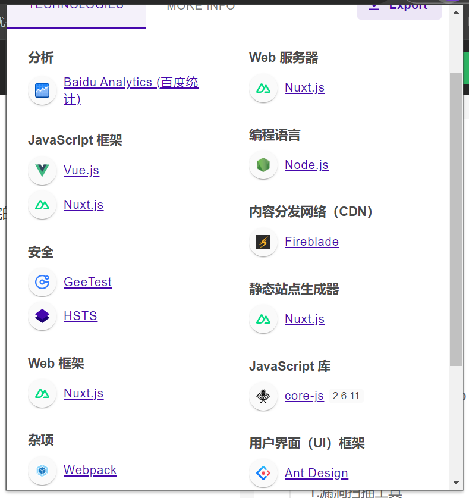
2.4 漏洞探测（手动&自动）
到了这一阶段就需要利用2.3搜集到的各类信息，尝试找到相应的漏洞进行探测。
探测方法
- 各类漏扫工具：AWVS、AppScan等等；
- 结合漏洞去开源漏洞库（exploit-db）等地方去尝试寻找是否是已经公开过的漏洞。
- 网络漫游找寻漏洞验证POC
- 平常也需要多关注一些关于网络安全的新闻，掌握漏洞实时消息，说不定日后就不会用到的
简单列举一下常见的软件漏洞：
1 | |
探测内容
- 系统漏洞：找寻对方系统是否没有打入相关补丁，幸运地话可能会发现对方操作系统并未及时打补丁，后果就是直接拿下！
- Webserver漏洞：Webserver配置问题–也就是中间件漏洞（这一块爆的漏洞还是很多的）
- Web应用漏洞：Web应用开发问题、还有就是Web开启了其他端口的服务，但却没设置授权访问，或者可以弱口令打入。
- 各种端口服务：这里主要是针对端口服务的开启，比如21–FTP、8080–这里可能有Apache-tomcat、struct2等等，常被用于代理www服务、7001端口–一般为weblogic服务、22–Linux-SSH远程连接服务、3389–Windows远程桌面连接等等。
- 通信安全：看看传输过程中的敏感数据是明文的、比如token在cookie的传输、jwt加密所用的key、各类加密盐等等。
2.5 漏洞验证
将上一步发现的有可能可以成功利用的漏洞都验证一遍。结合实际情况，搭建模拟环境进行测试，成功后再在目标中实现，验证发面包括一下内容：
- 自动化验证：结合自动化扫描工具提供的结果
- 手工验证：根据公开资源进行验证
- 试验验证：自己搭建模拟环境进行验证
- 登录猜解：有时可以尝试猜解一下登陆口的账号密码等信息，可关注前端js接口。
- 业务漏洞验证：如发现业务漏洞，要进行验证
- 公开资源的利用exploit-db/wooyun/渗透代码网站通用、缺省口令厂商的漏洞警告等
2.6 信息分析
这一步是为下一步实施具体渗透做准备。
- 精准攻击：准备好上一步探测到的漏洞exp（漏洞利用），用来对某个模块进行精准攻击
- 绕过防御机制：是否有防火墙等设备，如何绕过
- 定制攻击路径：最佳工具路径，根据薄弱点入口，搞清楚内网权限位置，确定最终目标
- 绕过检测机制：是否有检测机制，流量监控，杀毒软件，恶意代码检测等（免杀）
- 攻击代码：经过试验得来的代码，包括不限于xss代码，sql注入语句等
2.7 利用漏洞获取数据
- 实施攻击：根据前几步的结果，进行攻击
- 获取内部信息：基础设施（网络连接，vpn，路由，拓扑等）
- 进一步渗透：内网入侵，敏感目标
- 持续性存在：一般对客户做渗透不需要。rookit，后门，添加管理账号，驻扎手法等
- 清理痕迹：清理相关日志（访问，操作），上传文件等
2.8 信息整理
- 整理渗透工具：整理渗透过程中用到的代码，poc，exp等
- 整理收集信息：整理渗透过程中收集到的一切信息
- 整理漏洞信息：整理渗透过程中遇到的各种漏洞，各种脆弱位置信息
- 目的：为了最后形成报告，形成测试结果使用。
2.9 形成报告
- 按需整理：按照之前第一步跟客户确定好的范围，需求来整理资料，并将资料形成报告
- 补充介绍：要对漏洞成因，验证过程和带来危害进行分析
- 修补建议：要对所有产生的问题提出合理高效安全的解决办法
0x03 信息搜集
这里就单独着重学习一下信息搜集的各类奇淫巧技吧。
3.1 信息搜集的分类
1、主动式信息搜集（可获取到的信息较多，但易被目标发现）
2、通过直接发起与被测目标网络之间的互动来获取相关信息，如通过Nmap扫描目标系统。
3、被动式信息搜集（搜集到的信息较少，但不易被发现）
4、通过第三方服务来获取目标网络相关信息。如通过搜索引擎方式来搜集信息。
3.2 搜集什么信息
1、whois信息（微步）
2、网站架构
3、dns信息（通过查询dns我们可以检测是否存在dns域传送漏洞）
4、子域名搜集
5、敏感目录及敏感信息、源码泄露（搜索引擎+工具）
6、脆弱系统（网络空间）
7、旁站查询
8、C端查询
9、指纹信息
10、端口服务
11、备案信息
12、真实ip
13、探测waf
14、社工（朋友圈、微博、qq空间、求职、交易等社交平台）
15、企业信息（天眼查、企业信用信息公示系统、工业和信息化部ICP/IP地址/域名信息备案管理系统）
3.3 目标确认
域名注册信息
通过如下步骤确认目标所有者信息：
Whois 目标域名/主机名：whois http://example.com
解析目标域名/主机名的IP地址：dig +short http://example.com
获取域名的详细解析过程：dig +trace http://example.com
后续用于字典制作和进一步收集目标信息的基础
whois命令
whois就是一个用来查询域名是否已经被注册，以及注册域名的详细信息的数据库（如域名所有人、域名注册商）。
whois信息可以获取关键注册人的信息，包括注册商、联系人、联系邮箱、联系电话、创建时间等,可以进行邮箱反查域名，爆破邮箱，社工，域名劫持等等。
注：不同域名后缀的whois信息需要到不同的whois数据库查询
主要的实现原理：
1 | |
下面实操一手。
方法一：根服务器
通过原始网页查询：首先根据域名从whois的根服务器获取域名所在的whois服务器：https://www.iana.org/whois
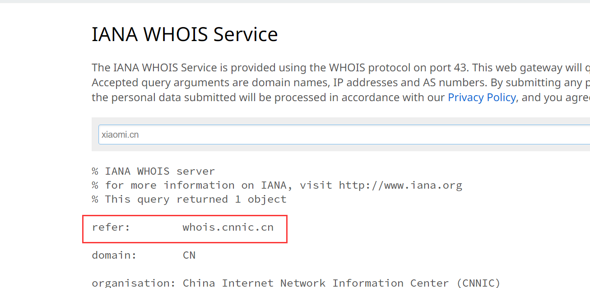
或者根据域名后缀在数据库中查询对应whois服务器地址：https://www.iana.org/domains/root/db
这里我们就以.cn为例，查询一下，如下图可以看到该域名对应的whois服务器
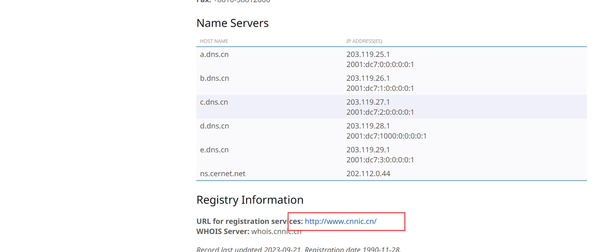
接下来就是根据得到的whois服务器获取域名信息，结果如下，但这里只能查询一级域名，不能携带www之类的前缀
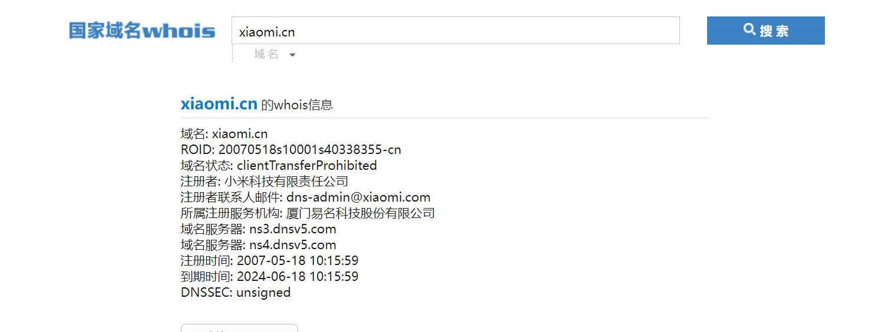
这里也能看到如果域名后缀不对应，也是查询不到的
方法二：第三方服务查询
- https://whois.aliyun.com/
- https://whois.cloud.tencent.com/
- https://who.is/
- https://www.whois.com/whois/
- https://whois.chinaz.com/
- https://whois.aizhan.com/
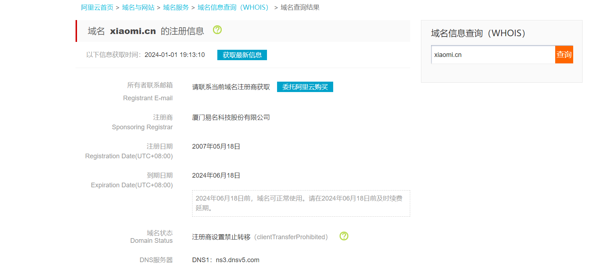
下方有对应的英文详细信息：
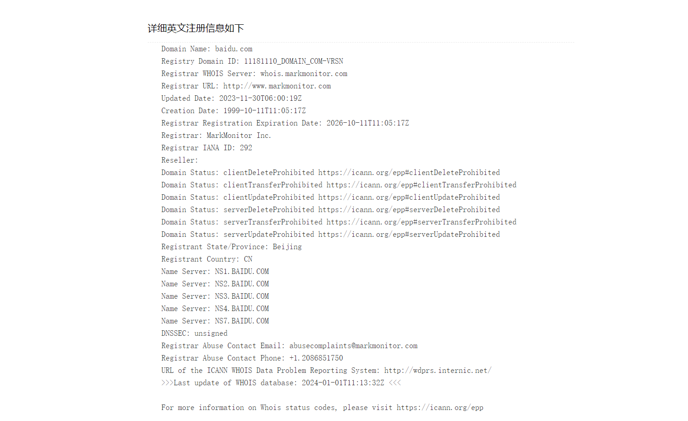
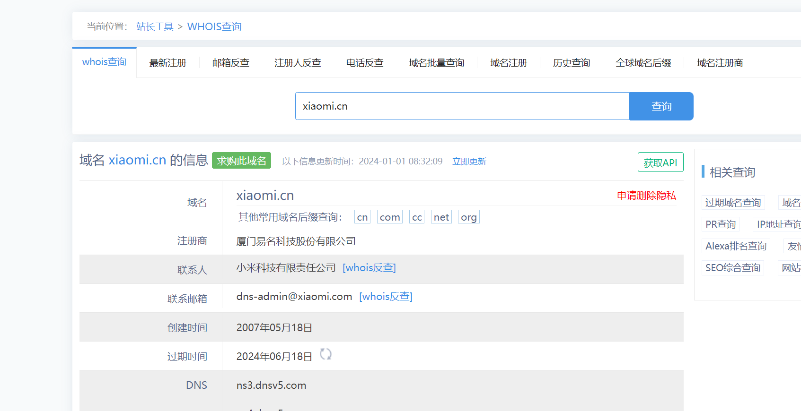
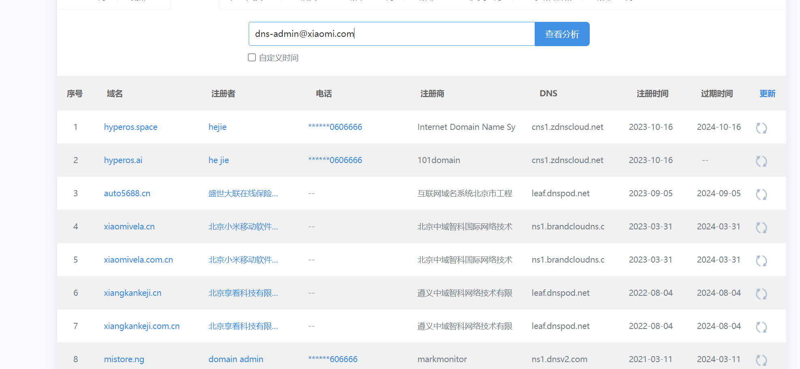
这里还有爱站
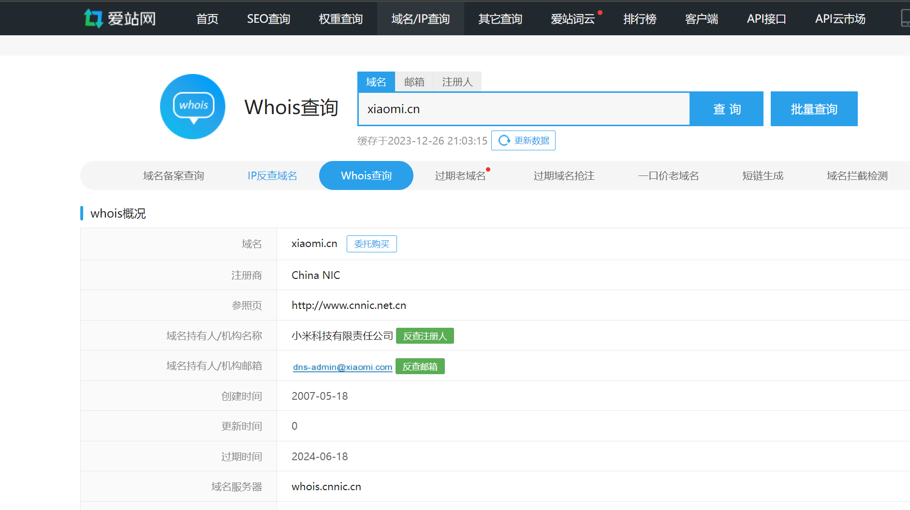
这里最全面的感觉就是微步社区了
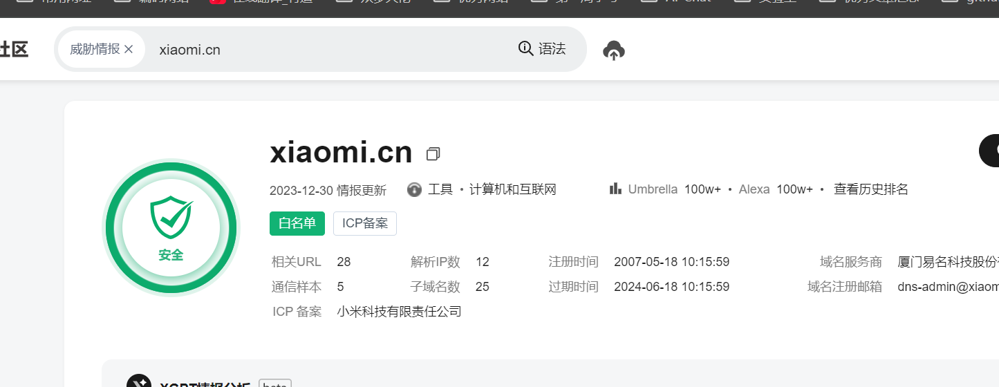
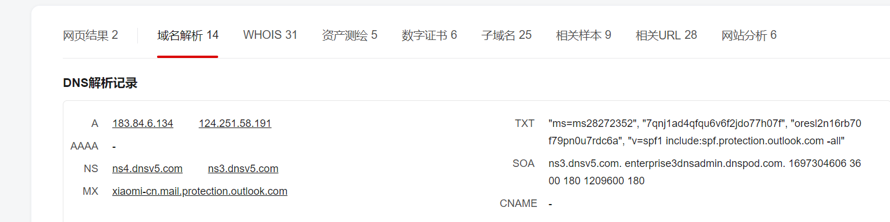
可以看到结果很全面，就是想要查询一些隐私还得氪金~~~
方法三：whois命令
就是用whois命令进行查询，这个命令在Linux与Windows下都可安装，这里用Linux演示了，至于安装办法就不赘述了
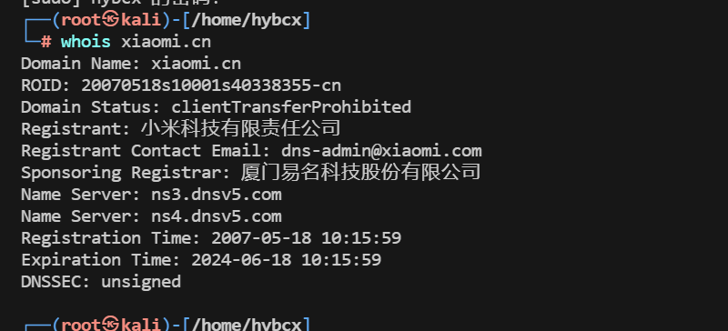
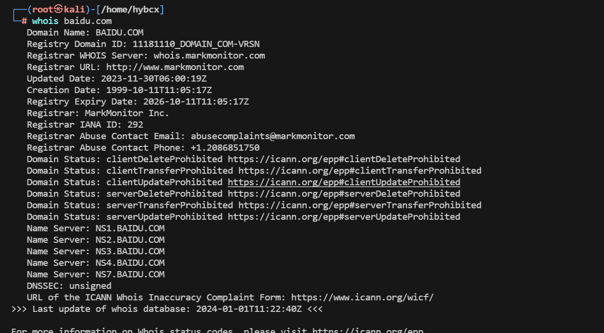
同样的如下图，二级域名就查询不到了
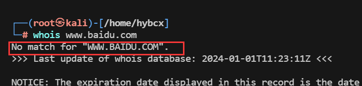
这里需要注意的是国际域名可以设置隐私保护，但像国内.cn等域名是不可以设置隐私保护的。
方法四：中文域名
这里看了几篇文章，还有用代码去实现的（自我感觉没太必要），这里的代码可以自己写，也可以直接用第三方库
具体的感兴趣参考：一文搞定：whois数据库查询域名信息（WHOIS）
这里介绍这篇文章提到的中文域名查询。。。
他这里说：通过接口直接查询中文域名，会提示没有查询结果。这时候需要将中文域名进行编码
在线编码：http://tools.jb51.net/punycode/index.php

其实，中文后缀的域名可以不编码，主要是中英结合的域名, 比如 http://中万.cn/
从浏览器直接复制过来是http://xn–chq7c.cn/
这是一种叫做：Punycode的编码方式
1 | |
然后加上前缀xn--，就和上面的结果一致了
1 | |
可以看到还是可以查询到的，不过这里如果进入其对应的refer服务器中就查询错误（格式不正确）
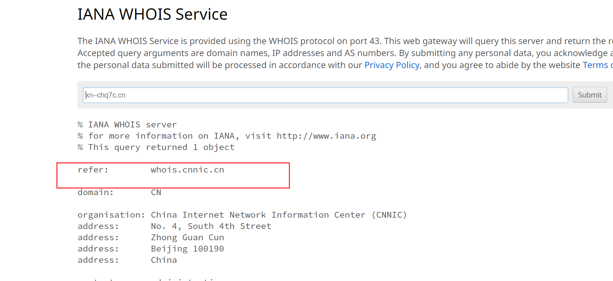
不过这里竟然可以直接中文域名查询！！当然whois根服务器也可以
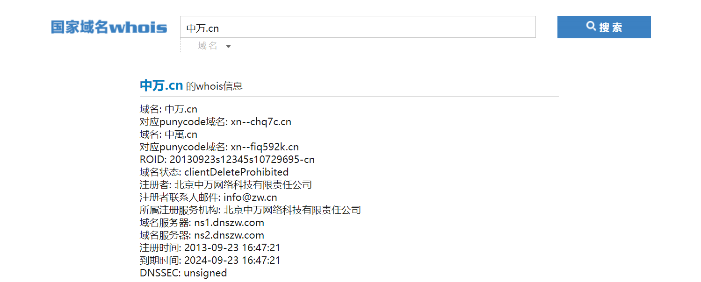
这里附上一个whois查询信息的解释：
1 | |
dig命令
dig（domain information group）是常用的域名查询工具，可以从DNS域名服务器查询主机地址信息，获取到详细的域名信息。这个命令是Bind的一部分，本身并没有在Windows和Linux系统中集成，所以如果我们想要使用该命令就需要先下载相应的软件包。–至于下载方式这里就不说了
简单使用：dig www.baidu.com
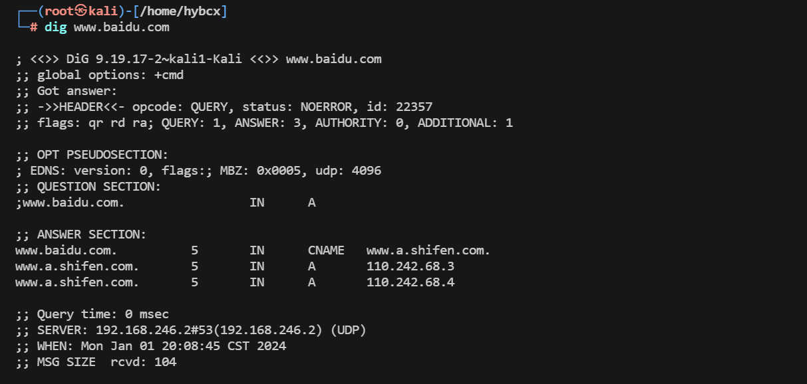
对一些字段的解释：
第一二行：输出了有关dig的版本信息，和全局设置选项：+cmd，以及输入参数信息
Got answer：输出了从DNS返回的技术信息，比较重要的是 status，如果 status 的值为 NOERROR ，则说明本次查询成功。这段信息可以用选项 [no]comments 来控制是否显示，但是小心禁止掉comments也可能关闭一些其它的选项。
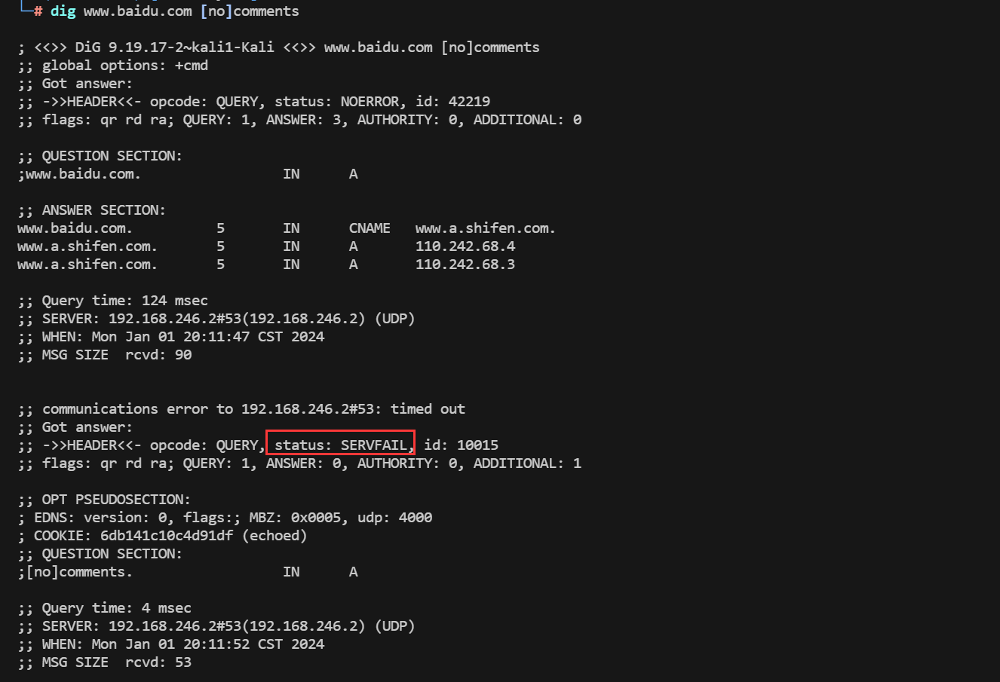
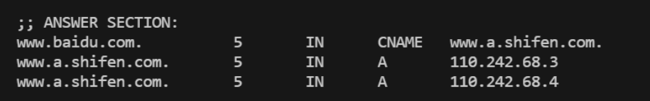
QUESTION SECTION：查询字段，显示了我们查询的域名以及查询的服务，A代表的是查询A记录，即主机查询
ANSWER SECTION：回答字段这里的结果表示：要查询www.baidu.com先查询CNAME记录，对www.a.shifen.com进行访问，当我们访问www.a.shifen.com后，该主机让我们访问110.242.68.3，我们访问110.242.68.3后，这个ip的主机会告诉我们www.baidu.com的IP是110.242.68.4
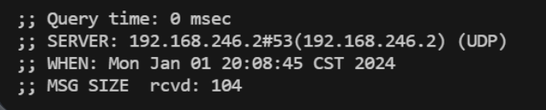
这部分显示了请求所花的时间，dns服务器，当前时间，以及查询信息的大小
还有一个值得记录的是-x选项，说是根据IP反查域名（另外每个命令后面添加+short可以简化输出信息）
1 | |
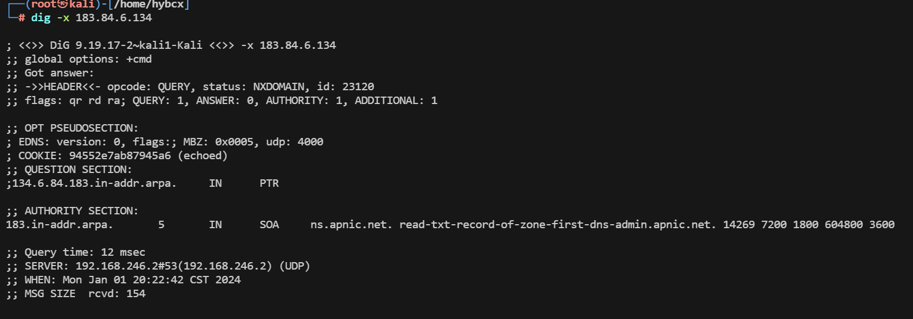
不过这里始终没看出来域名在哪里。。。。还有一个+trace命令可以看到域名解析详细过程
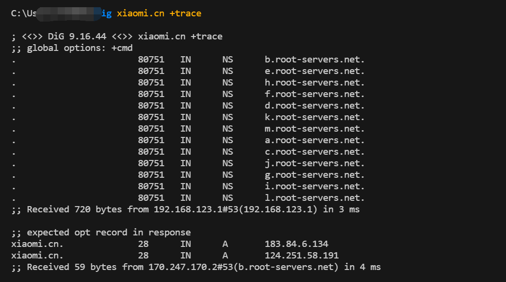
获取真实IP
为了保证网络的稳定和快速传输，网站服务商会在网络的不同位置设置节点服务器，通过 CDN（Content Delivery Network，内容分发网络）技术，将网络请求分发到最优的节点服务器上面。如果网站开启了 CDN 加速，就无法通过网站的域名信息获取真实的 IP，要对目标的 IP 资源进行收集，就要绕过 CDN 查询到其真实的 IP 信息。
一个小tip：浏览器切换手机模式，可能是真实ip，公众号、小程序中的资产也可能对应真实ip。
如何判断是否有CDN
在对目标 IP 信息收集之前，首先要判断目标网站是否开启了 CDN，一般通过不同地方的主机 ping 域名和 nslookup 域名解析两种方法，通过查看返回的 IP 是否是多个的方式来判断网站是否开启了 CDN，如果返回的 IP 信息是多个不同的 IP，那就有可能使用了 CDN 技术。
方法一：多地ping
使用各种多地 ping 的服务，查看对应 IP 地址是否唯一，如果不唯一多半是使用了CDN， 多地 Ping 网站有：
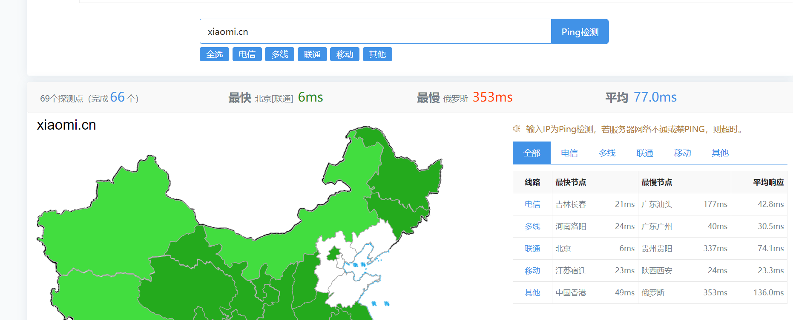
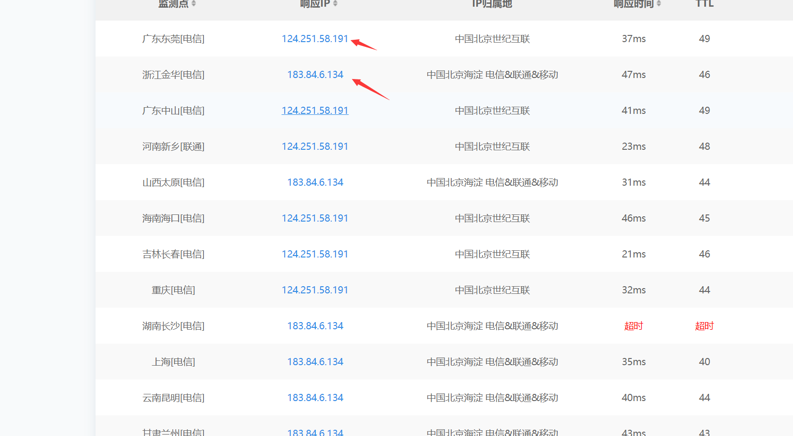
可以到有多个IP，一般这种方法要根据多个网站都进行尝试一下，才能更好的确定，不过这里能用的我知道的只有两个
http://ping.chinaz.com/、http://ping.aizhan.com/而且后者还似乎崩了，查询没反应
又去谷歌找了一番，无果，感觉有需要的话需要多翻翻一些网站了。
方法二：nslookup
试用nslookup进行检测，如果返回域名解析对应多个IP，那么多半是试用了CDN.
1 | |
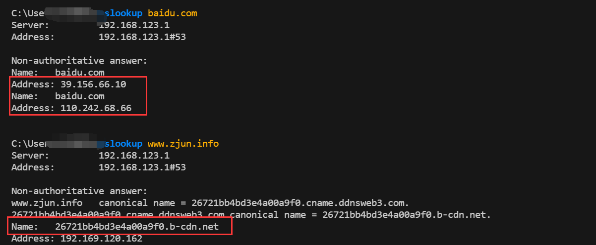
这里看到一个是有多个IP地址，一个是name的值直接就是cdn.net什么的，这很明显就是有CDN了
方法三：在线工具
在线工具查看是否存在CDN，可以参考以下站点:
这里推荐第二个站点
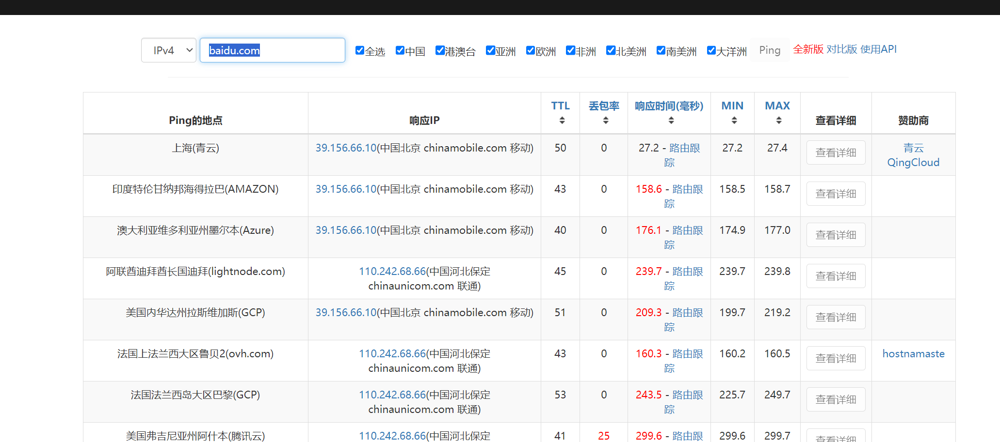
绕过CDN
查询历史DNS记录
查看 IP 与 域名绑定的历史记录，可能会存在使用 CDN 前的记录，相关查询网站有
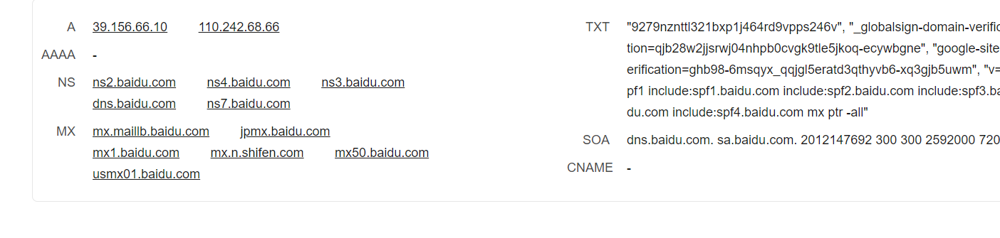
- https://censys.io/ipv4?q=baidu.com
- https://github.com/projectdiscovery/cdncheck –未仔细查看
- https://viewdns.info/iphistory/
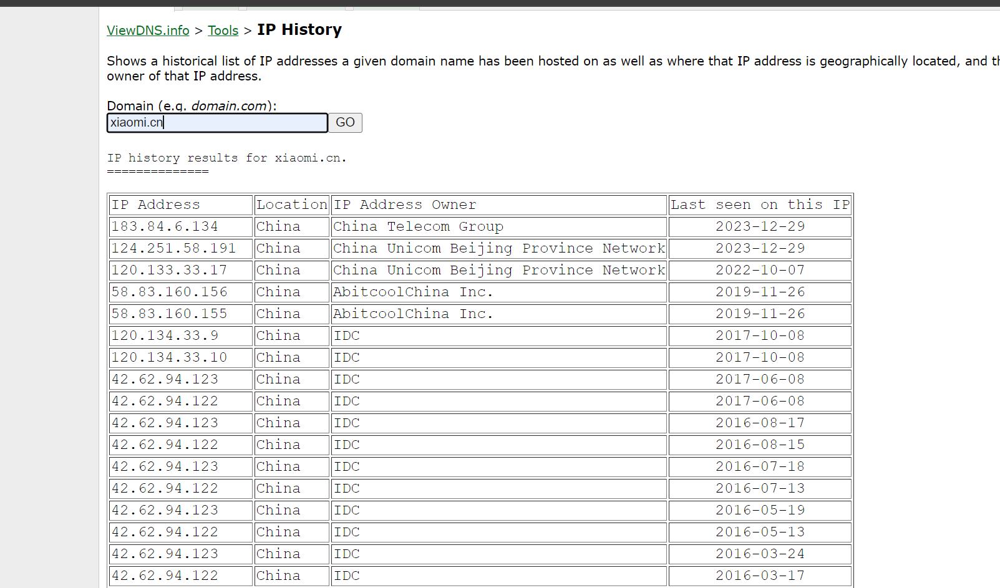
https://securitytrails.com/ –需要企业邮箱注册，不过很全
SecurityTrails（前身为 DNS Trails）拥有大约3.5万亿DNS记录，3亿whois记录，8亿SSL证书记录以及超过4.5亿子域的记录数据。自2008年以来，网站每天都收集和更新海量数据。
DNS 记录：
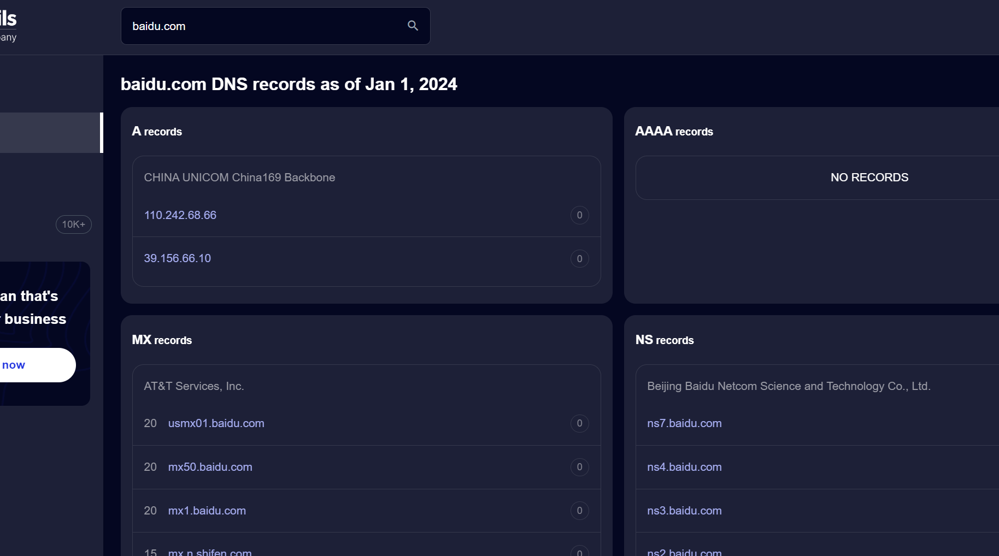
IP历史
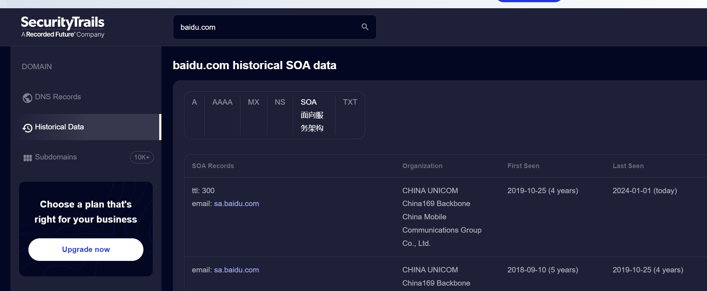
子域名：
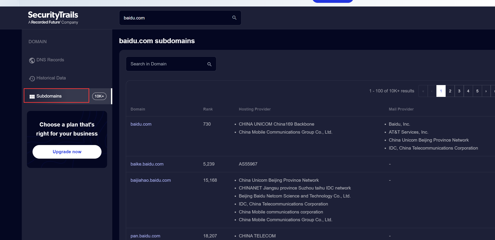
Complete DNS（https://completedns.com/）Complete DNS 拥有超过 22 亿个DNS变更记录，提供API，支持同时进行多域名/IP查询。
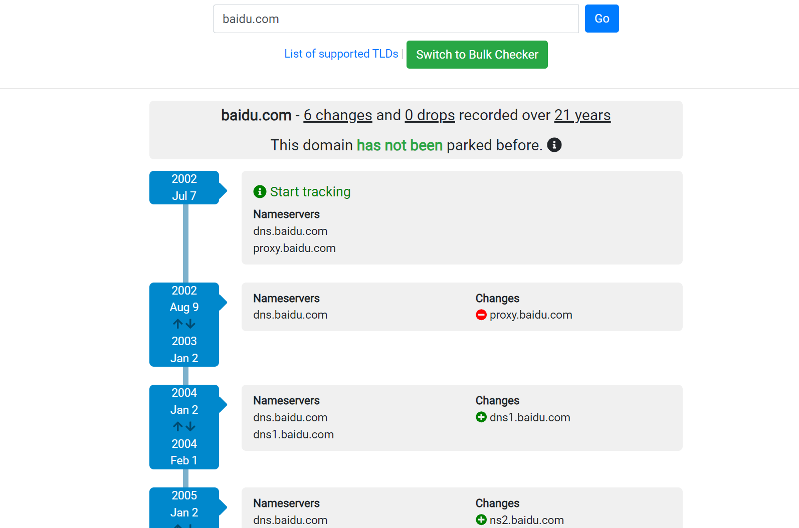
WhoISrequest （https://whoisrequest.com/）
WhoISrequest 这个网站自2002年以来一直在跟踪和记录DNS历史变更，数据底蕴很足。
不过这里查了半天没查到什么信息，而且这个网站似乎对于dns历史记录用的是上面的网站的api
Whoxy（https://www.whoxy.com/）
Whoxy 拥有爬取超过 3.65亿个子域数据，该网站 API 调用非常方便，以 XML 和 JSON 格式返回数据。
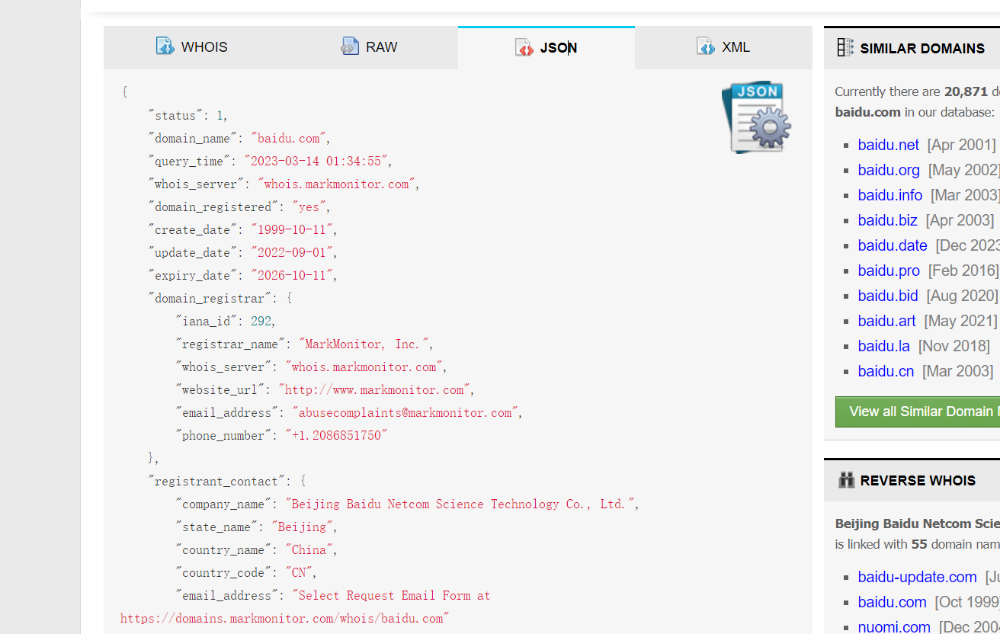
还有很多网站，这里就不一一介绍了，详细可浏览参考文章，这里汇总一下
- http://www.cdnplanet.com/tools/cdnfinder
- http://www.ipip.net/ip.html
- https://x.threatbook.cn/
- https://censys.io/ipv4?q=baidu.com
- https://github.com/projectdiscovery/cdncheck
- https://viewdns.info/iphistory/
- https://securitytrails.com/
- https://completedns.com/
- https://whoisrequest.com/
- https://www.whoxy.com/
- https://dnsdb.io/
- https://reverse-ip.whoisxmlapi.com/
使用国外主机请求域名
部分国内的 CDN 加速服务商只对国内的线路做了 CDN 加速，但是国外的线路没有做加速，这样就可以通过国外的主机来探测真实的 IP 信息。
探测的方式也有两种，可以利用已有的国外主机直接进行探测；如果没有国外主机，可以利用公开的多地 ping 服务（多地 ping 服务有国外的探测节点），可以利用国外的探测节点返回的信息来判断真实的 IP 信息。
网站信息泄露漏洞
利用网站存在的漏洞和信息泄露的敏感信息、文件（如：phpinfo 文件、网站源码文件、Github 泄露的信息等）获取真实的 IP 信息。
phpinfo 页面中有一个 SERVER_ADDR 字段会显示该主机真实 IP。
查询子域名
这里注意的就是子域名、C段以及旁站（同IP网站）
由于 CDN 加速需要支付一定的费用，很多网站只对主站做了 CDN 加速，子域名没有做 CDN 加速，子域名可能跟主站在同一个服务器或者同一个 C 段网络中，可以通过子域名探测的方式，收集目标的子域名信息，通过查询子域名的 IP 信息来辅助判断主站的真实 IP 信息。 ———具体的方法在下面叙述
邮件信息
一般的邮件系统都在内部，没有经过 CDN 的解析，通过利用目标网站的邮箱注册、找回密码或者 RSS 订阅等功能，接收到发来的邮件后，查看邮件源码就可以获得目标的真实 IP。–这里附上一个网上的成果图
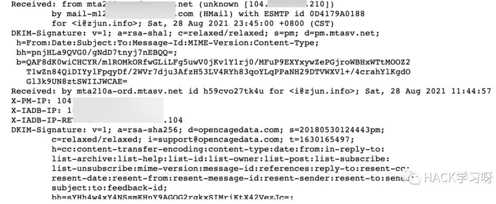
目标网站 APP 应用
如果目标网站有自己的 App，可以尝试利用 Burp Suite 等流量抓包工具抓取 App 的请求，从里面可能会找到目标的真实 IP。
子域名查询
这里除了常见的网络空间如fofa、shodan、zoomeye、censys等，就是一些强大脚本工具了。这里熟悉几个常见的
SubDomainsBrute
项目地址：https://github.com/lijiejie/subDomainsBrute
SubDomainsBrute 是通过纯 DNS 爆破来寻找子域名，为了最大提升脚本效率，采用协程+多进程的方式进行爆破。Python 3.5 以上需要安装 aiodns 库进行异步查询，python 2 需要安装 dnspython 库和 gevent 协程库。
且在最近更新之后是支持扫描泛解析域名的，使用 -w 参数。
如图，我们针对一个泛解析的域名进行爆破，subDomainsBrute 会提示 any-sub 错误，之后使用 -w 参数开启泛解析强制爆破：
0x09 参考文章
DNS篇之dig使用详解 ——很详细